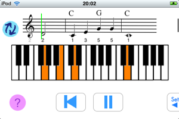
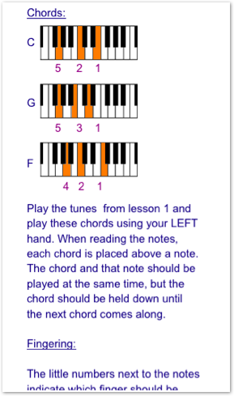
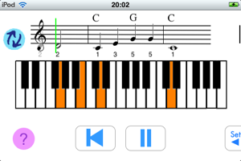
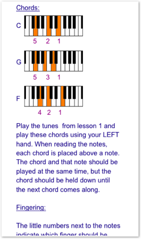
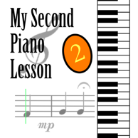
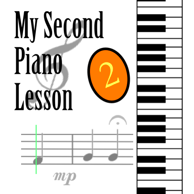

Second Piano Lesson
After mastering our first lesson, we now turn to using the left hand to play Chords. Chords are groups of note represented by the letters A-G.
How To Use:
Set the tempo to 80 and practice the left hand. Play the chords as they appear above the notes. Hold down the chord until the next chord comes along. After you are comfortable with the changes, set the Chords Off settings and play them while the device is playing the melody. Once your left hand is keeping up with the tempo, add your right hand. Start with the melodies from lesson 1, and then move to the new ones
Write us:
We are Currently working to publish our lessons 3-5 as soon as possible. Some new exiting features are coming up in lesson 3. If there is anything else you would like to tell us please write to:

When Are You Done?
After being able to play all five songs at a tempo of 200, try to play them by heart. Using the Sound settings, turn the notes off, and the Chords off.Play along with the click without looking at the display.
 





 
